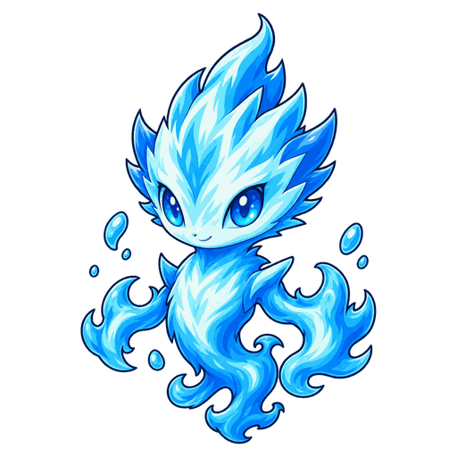
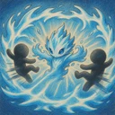

3Dالإحصاءات حسب المستوى
| Lv. | الصحة | قوة الهجوم | قوة السحر |
|---|---|---|---|
| 1 | 300 | 20 | 20 |
| 2 | 345 | 23 | 23 |
| 3 | 397 | 26 | 26 |
| 4 | 456 | 30 | 30 |
| 5 | 525 | 35 | 35 |
| 6 | 603 | 40 | 40 |
| 7 | 694 | 46 | 46 |
| 8 | 798 | 53 | 53 |
| 9 | 918 | 61 | 61 |
| 10 | 1055 | 70 | 70 |
| 11 | 1214 | 81 | 81 |
تزداد الصحة وقوة الهجوم وقوة السحر بنسبة 15% مع كل مستوى (حتى Lv.11).
No.005
هايدريس
داعمبعيد المدىيشفي حلفاءه المصابين بالتسلسل بدءًا بصاحب أدنى نسبة صحة، باستثناء نفسه، ويدفع الأعداء من حوله بعيدًا عندما يتعرض لهجوم.
- الدفاع
- 10
- سرعة الهجوم
- 1 في الثانية
- المدى
- بعيد المدى · 3 خانات
- المانا
- 0 / 125
المهارات

تيار جارف
عندما يتلقى ضررًا مباشرًا، يدفع جميع الأعداء ضمن 1 خانة من حوله مسافة 1 خانة بعيدًا عنه مباشرة. وقت إعادة الاستخدام: 4 ث.